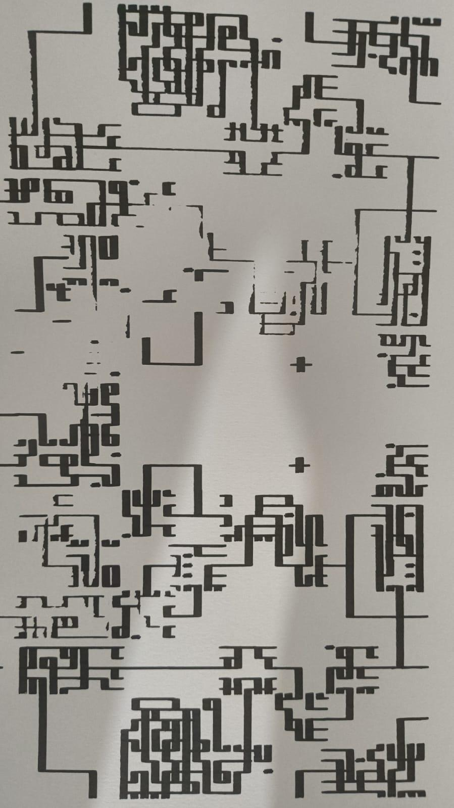
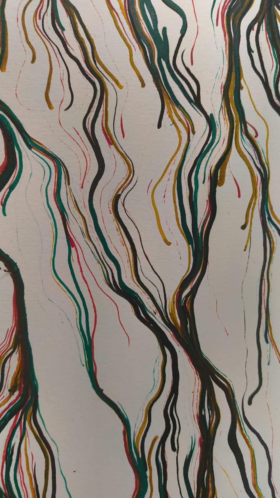
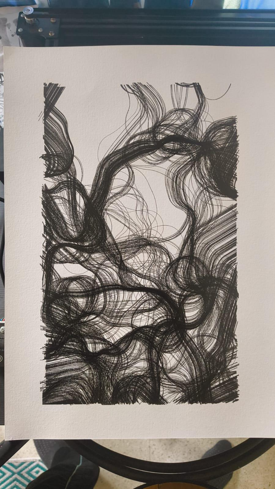
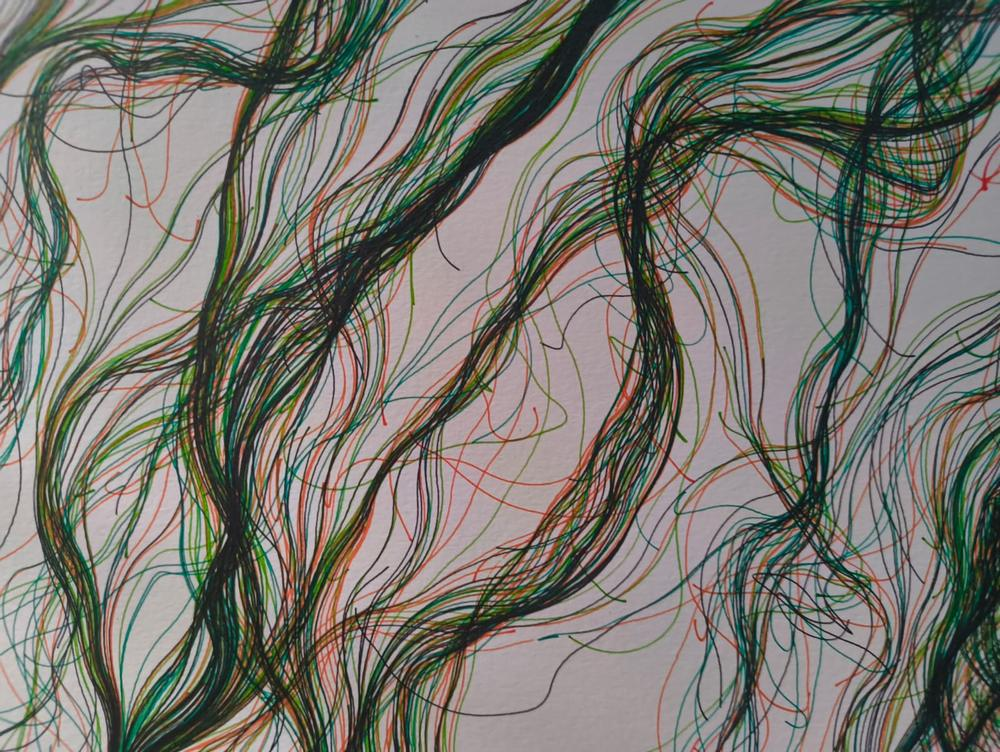
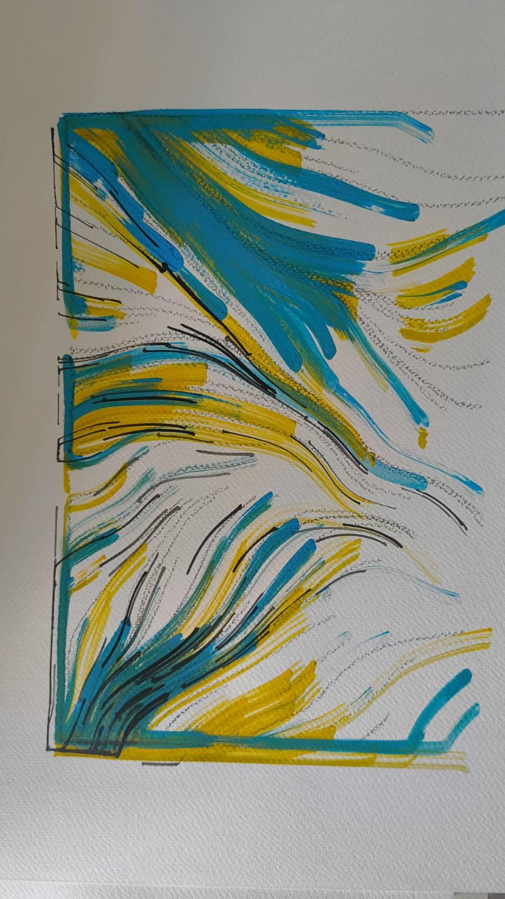
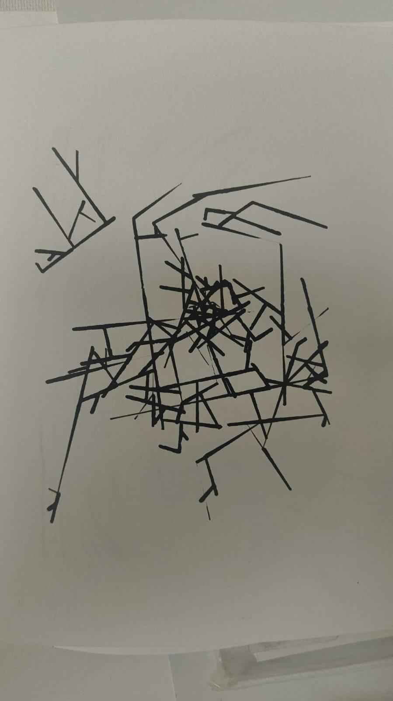
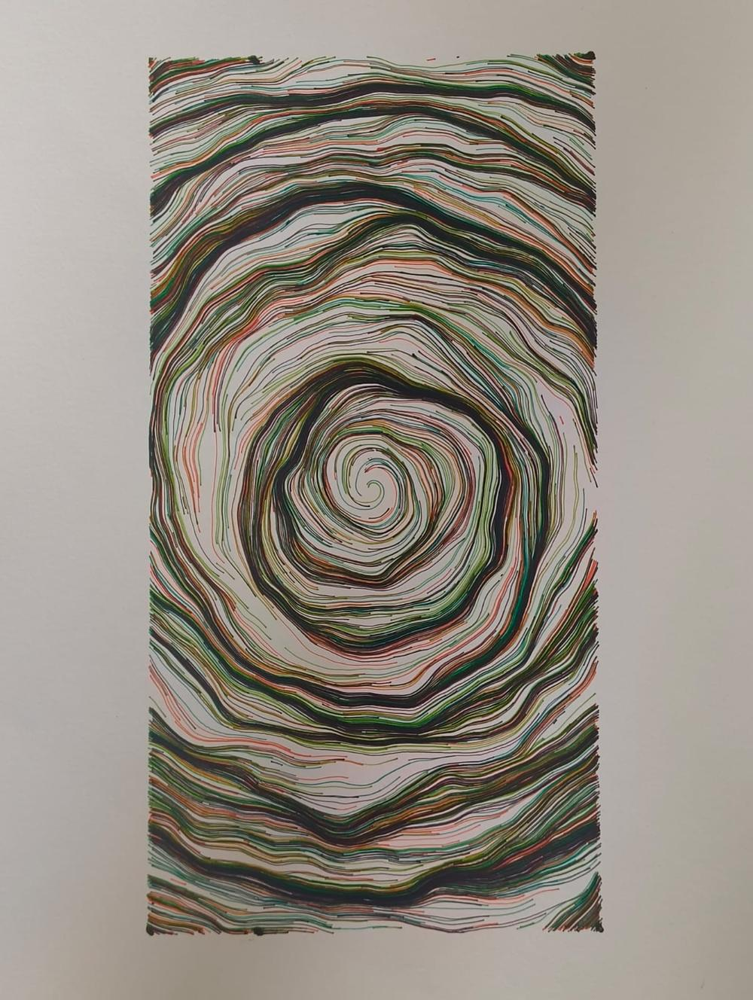
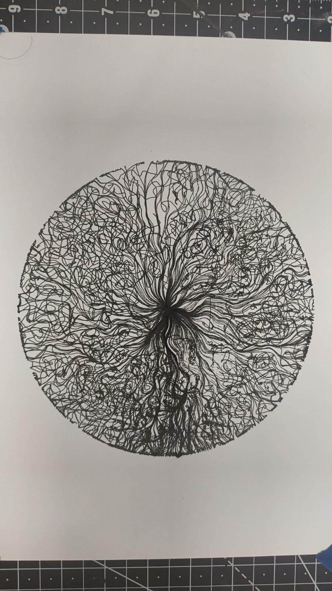
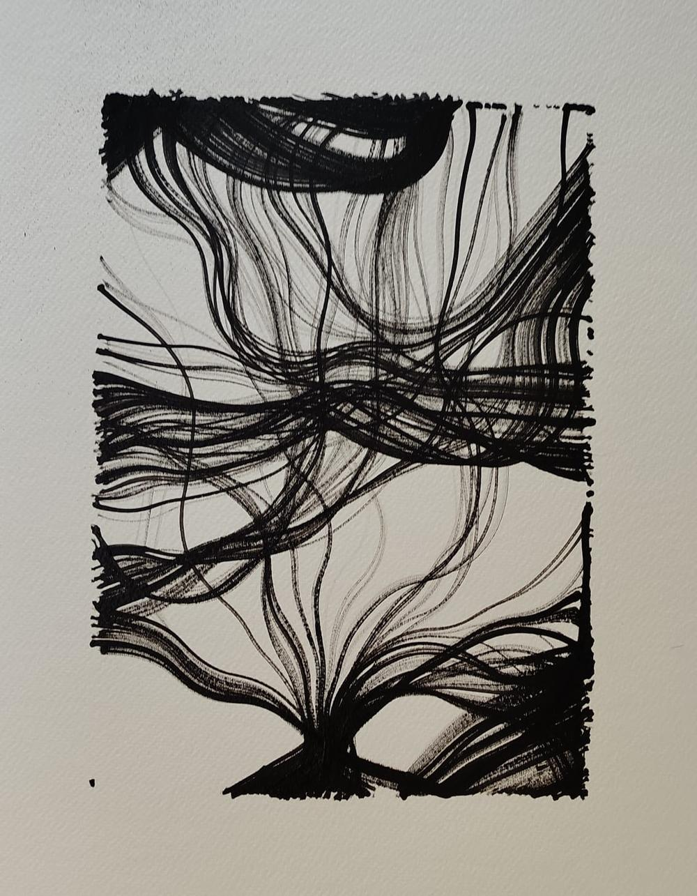

The Word
Sanskrit gives us a word that carries two truths at once. Kāla — time. Kalā — art. One word, one breath, two halves of the same thing. Time is the only god every human worships without exception — the hours burn for the billionaire and the labourer equally. Art is the only practice that makes those hours feel like they belonged to us.
A currency that is both is not a metaphor. It is the most honest form of money ever proposed. Every economy is secretly built on time. Every civilisation is secretly built on art. We have simply never had the tools to make that visible. Until now.
The World in Crisis
The economy we inherited was built for a world that is ending. It assumes that human labour creates value, that wages are how prosperity is distributed, and that money — created as interest-bearing debt — can grow indefinitely. All three assumptions are now breaking simultaneously.
Machines are learning faster than institutions can respond. The work that sustained billions is dissolving into algorithms. The money system — debt to banks at the bottom, wealth concentration at the top, borders as value walls in between — was never designed for abundance. It was designed for scarcity and control. It produced both, expertly.
We do not need a reform. We need a replacement. Not a revolution built on anger, but a new beginning built on a different idea of what value actually is.

One Law for All
KALA is generated by a single algorithm — one rule-set, shared by every person on Earth without exception. The same generative law for all. What the algorithm produces for you is determined by three things only: the luck of who you were born, the effort of what you choose to make, and the moment in which you make it.
The algorithm is called Wave Function Collapse — a process borrowed from quantum mechanics, where potential collapses into the actual. Each KALA piece is a moment of collapse: infinite possibility becoming one unrepeatable thing.
Your fingerprint — nature's own generative seed, written on you in the womb by physics rather than genetics — shapes the form of your KALA. Your hand, already a unique generative artwork, becomes the seed of your currency.
Where Value Comes From
KALA's denomination is not declared by anyone. It is computed — openly, from the work itself. A dense, deeply recursive piece carries more value than a sparse one because it cost more time and effort to bring into being. Density is earned. Symmetry — the multiplier — is a gift of the fingerprint.
Some hands make symmetric works. Most do not. The luck is visible, written into the form of the piece itself. Nothing is hidden. The medium is the ledger.
Prosperity flows from luck, skill, and effort — resting on a floor of basic dignity owed to every human simply for being alive. The first unit any person receives is a gift. Not purchased. Not earned. Given. That gifting is the floor. What grows above it is yours to make.

Time Redesigned

Every KALA unit is minted at an exact moment — timestamped to the degree. The new calendar KALA proposes treats the year as a circle: 360 days, each one a degree of the turn. Time as rotation. A full year as one complete revolution. The piece above is that idea made physical: the flow field contained within a perfect circle, radiating from a single point of origin.
One planetary clock. No time zones. When it is a given hour, it is that hour for every human alive at once. A borderless world cannot have borders drawn in time.
The KALA unit minted at 180° of Turn One is a different thing from the one minted at 0° — and both of them are a frozen moment, the generative structure of that exact instant rendered in ink on paper and recorded on the ledger.
A Legacy That Cannot Be Stolen
The current system protects wealth through secrecy — accounts, passwords, codes that die with their holders or can be seized by a state. KALA protects a legacy through the opposite: radical publicity and distributed trust.
Every minting is witnessed and recorded, publicly, on an open ledger. Ownership is secured not by a secret one person must remember, but by a web of trust — the key distributed among the people who matter to you, requiring several of them together to act. A legacy held by your community, not locked in a skull.
It cannot be taken because it lives in multiple hands. It cannot die because those hands outlast any one of them. It grows stronger the more it is shared — which is the exact inverse of how money currently works.
Buying Out the World
Kurt Cobain covered a Bowie song: The Man Who Sold the World. It described a condition — a dissociation, the selling of the self into a system that destroys it. We have all, for some time, lived inside that song.
KALA proposes the opposite transaction. Not selling the world but buying it back. Not for an owner. For everyone. The first exhibition is not a sale — it is a first minting. The first KALA units are not sold; they are given. The ledger opens in public, in a gallery, in front of witnesses. From that moment the world can be purchased one artwork at a time.
Today KALA buys art made by the Order. Tomorrow it buys the work of a widening circle of artists, makers, and communities who accept it. City by city. Exhibition by exhibition. The circle of acceptance grows until it has no edge.
A Selection from the Order
Every piece is plotted by hand — archival ink on textured paper. Each is unique, generated once, unrepeatable. The range below shows the full spectrum: from the circuit-maze of Wave Function Collapse to the organic surge of flow fields in multiple inks.






Every Line Drawn in Real Time
The pen plotter draws each piece live — a mechanical arm holding archival pens, moving according to the algorithm's instructions, one line at a time. During the exhibition a plotter will run continuously in the gallery. Visitors will watch their own KALA piece being born.
The First Minting
June 2026
A live pen plotter will draw in the gallery throughout the run. Every line is made in real time — archival ink on textured paper, each piece unique and unrepeatable. Visitors will scan their fingerprints, join the Order, and receive their first KALA unit as a gift. The ledger will be on the wall, updating in public, for the duration of the show.
Works will be available in three forms: as a digital mint, as a print, and as the plotted original — each priced to reflect not the cost of materials but the cost of time and craft. The currency the works are purchased with is the same currency they create. The exhibition is both the art and the economy.
Bengaluru is where it begins. The next city is already being decided by the community of first holders. This is Issue One.